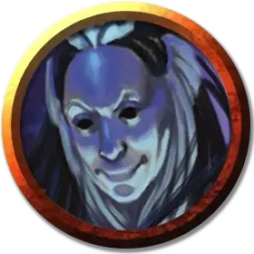

Чемпион Усамигараса
Champion of Usamigaras
Средний Гуманоид, хаотично-нейтральный

Класс Доспеха 12 (15 с доспехом мага)
Хиты 33 (6к8 + 6)
Скорость 30 футов
| мод | спас | ||
|---|---|---|---|
| СИЛ | 10 | +0 | +0 |
| ЛОВ | 14 | +2 | +2 |
| ТЕЛ | 12 | +1 | +1 |
| мод | спас | ||
|---|---|---|---|
| ИНТ | 17 | +3 | +5 |
| МДР | 14 | +2 | +2 |
| ХАР | 15 | +2 | +4 |
Навыки Ловкость рук +4, Магия +5, Обман +6
Чувства пассивное Восприятие 12
Языки Общий
Опасность 2 (450 опыта)
Бонус мастерства +2
Действия
Мультиатака. Чемпион совершает две атаки Магической вспышкой, либо одну атаку Магической вспышкой и применяет Использование заклинаний.
Магическая вспышка. . Дальнобойная или рукопашная атака заклинанием: +5 к попаданию, досягаемость 5 фт. или дистанция 120 фт., одна цель. Попадание: 8 (1к10 + 3) урона силовым полем.
Использование заклинаний. Использование заклинаний. Чемпион накладывает одно из следующих заклинаний, используя Интеллект в качестве базовой характеристики (Сл спасброска 13):
• Неограниченно: свет [light], доспехи мага [mage armor] (только на себя), малая иллюзия [minor illusion]
• 2/день каждое: очарование личности [charm person], маскировка [disguise self], безмолвный образ [silent image]
• 1/день каждое: корона безумия [crown of madness], дребезги [shatter]
Бонусные действия
Аура обмана (1/день). Чемпион излучает ауру призрачных иллюзий, заполняющих сферу радиусом 10 футов с центром на нем. До тех пор, пока аура действует, существа совершают броски атаки с помехой против чемпиона и всех существ по его выбору в пределах области ауры. Аура перемещается вместе с чемпионом и существует в течение 1 минуты, либо пока чемпион не станет недееспособен или не использует бонусное действие для того, чтобы закончить ее действие.
Описание
Магами Усамигараса являются кинидские заклинатели, поклоняющиеся Усамигарасу — богу магии, посланников и обмана. Они прячут свои намерения и личины за серебряными масками, изображающих лик их божества.
Секретность считается важнейшим фактором среди магов Усамигараса. Их участники шепчутся в присутствии посторонних и разбавляют свою речь ложью, иногда даже слишком очевидной. Такое поведение не считается грубостью среди членов, которые считают обман достойным почитания, а не порицания.
Чемпион Усамигараса
Чемпионы благословляются Усамигарасом на продвижение фракции любыми средствами. Они обладают большим набором заклинаний, чем их собратья, и могут излучать ауру иллюзий, чтобы сбивать противников с толку.